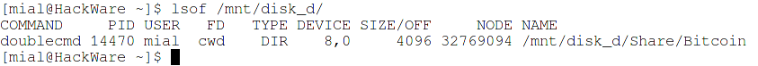
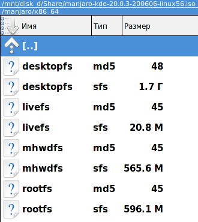
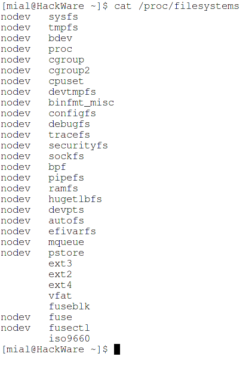
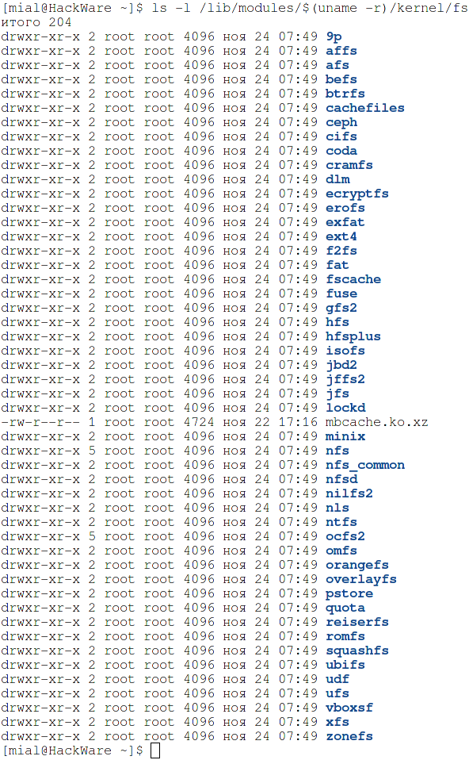
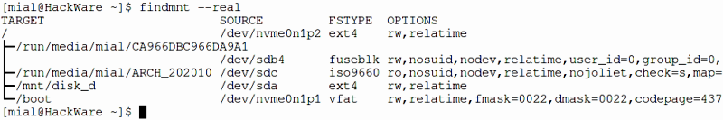
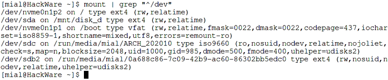
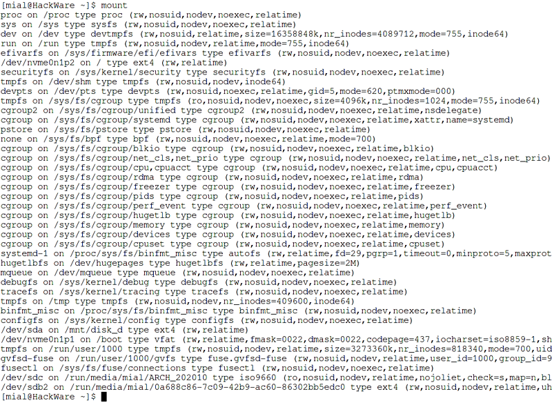
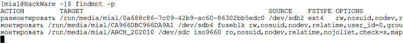
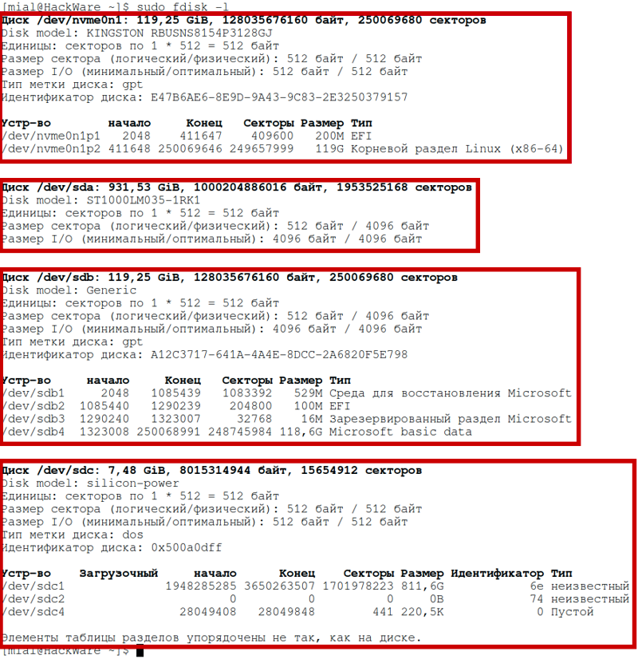
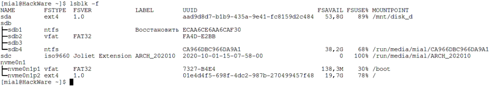

Монтирование в Linux позволяет получить доступ к содержимому диска и организовать структуру файловой системы. С помощью монтирования также можно открыть для работы образ диска (например, созданного с помощью программы dd), а также открыть для доступа и редактирования самые разные файловые системы и образы дисков (например, образы дисков виртуальных машин); даже удалённые сетевые директории могут быть смонтированы, в результате чего они станут доступны как будто бы файлы на любом другом локальном хранилище.
Кроме того, что с помощью монтирования можно работать с образами дисков, правильные настройки монтирования необходимы для компьютера к которому подключается диск для криминалистического анализа — например, этот диск не должен автоматически монтироваться с правами записи (чтобы не быть испорченным).
В Linux есть такое понятие как «монтирование» диска. Чтобы получить доступ к файлам на этом диске, его нужно сначала смонтировать. Может возникнуть вопрос, зачем такие сложности? Монтирование это мощнейшая вещь, которая позволяет поразительно гибко настроить файловую систему!
Суть монтирования в том, что в файловой системе создаётся новая директория (обычная папка), допустим, это папка /mnt/disk_d. А затем командой mount указывается, что теперь, например, диск /dev/sda смонтирован в директорию /mnt/disk_d. После этого можно получить доступ к файлам диска /dev/sda открыв папку /mnt/disk_d в любом менеджере файлов.
С помощью такого подхода — когда любой диск может быть любой папкой в системе, можно делать очень гибкую настройку. Самый частый пример, встречающийся на практике: файлы пользователя хранятся в папке /home/имя_пользователя/, например, у меня это папка /home/mial/. При установке операционной системы я могу сделать так, что мой второй или третий диск (а не системный) будет смонтирован в точку /home/mial/. То есть вся операционная система будет располагаться на одном диске, а все мои пользовательские файлы — на другом. Что это даёт? В случае переустановки системы, я вновь настрою монтирование диска с моими файлами в папку /home/mial/ и в результате в новой, только что установленной системе, уже будут на месте все мои документы, фотографии и прочее!
Поскольку часто узким местом в мощных компьютерах является скорость чтения с диска, то на на серверах с высокой нагрузкой практикуется перенос файлов баз данных (например, /var/lib/mysql/ на другой диск), возможен перенос файлов сервера (/srv/http/) на третий диск, файлов логов (/var/log/httpd/) на ещё один диск и т. д. Это позволяет добиться того, что данные из баз данных считываются независимо от записи журналов, то есть пока выполняются операции чтения-записи для одного процесса, другому процессу не нужно ждать своей очереди — всё выполняется одновременно.
Ещё монтирование позволяет выбрать различные режимы, например, диск можно смонтировать в режиме «только чтение» - в результате с него можно будет просматривать файлы, но испортить этот диск невозможно.
В общем, несмотря на то, что монтирование является чем-то непривычным для пользователей Windows, это потрясающая функция! Причём ничего сложного в этом нет, если понять суть.
Монтирование — это один из видов действий, которые можно выполнять с диском (блочным устройством). Обращаясь к устройству по его имени /dev/* возможно:
При этом операция монтирования препятствует другим действиям, например, форматированию или созданию нового раздела. Перед тем как перейти к управлению разделами на диске или их форматированию, необходимо отмонтировать (размонтировать) диск, иначе будет получена ошибка, что диск используется.
При этом сама операция размонтирования (или перемонтирования) может завершиться неудачей и ошибкой, что диск уже занят. Это происходит потому, что какая-то программа открыла и использует файл на смонтированном диске.
Чтобы выяснить, какая программа препятствует операции размонтирования/перемонтирования, можно использовать программу lsof следующим образом:
lsof /ТОЧКА/МОНТИРОВАНИЯ/
Например, я пытаюсь перемонтировать диск, смонтированный в директорию /mnt/disk_d/ и получаю ошибку, что диск используется. Чтобы определить, какая команда это делает, я запускаю:
lsof /mnt/disk_d/

Как можно увидеть, данной программой является doublecmd, идентификатором процесса, по которому её можно выключить с помощью команды kill, является 14470, также показано, что программу запустил пользователь mial, а также показано, какой именно файл или папка являются открытыми (колонка NAME).
Для того чтобы компьютер смог успешно работать с файловой системой, необходимо, чтобы Linux поддерживал данную файловую систему. К счастью, в ядро Linux уже встроена поддержка большинства файловых систем, с которыми вы можете столкнуться.
Самыми распространёнными файловыми системами являются ext2, ext3, ext4, xfs, btrfs, vfat, sysfs, proc, nfs и cifs.
Уже на этапе установке Linux из ISO образа вы могли сталкиваться с одной из этих файловых систем. Образ диска ISO сам по себе является файловой системой iso9660. Но это ещё не всё, на образе файлы дистрибутива могут быть упакованы в файлы *.sfs — это файловая система sysfs (так сделано в Manjaro). На установочном образе Linux Mint вы сможете найти файл filesystem.squashfs, это файловая система Squashfs.
Содержимое установочного диска Manjaro:

Содержимое установочного диска Linux Mint:
Вам не нужно беспокоиться об этом разнообразии файловых систем, поскольку их поддержка уже встроена в ядро.
Чтобы просмотреть список всех поддерживаемых файловых систем на вашем дистрибутиве, выполните следующие команды:
cat /proc/filesystems
ls -l /lib/modules/$(uname -r)/kernel/fs


Для работы с ещё более экзотическими файловыми системами, такими как образы дисков виртуальных машин, может понадобиться установка дополнительного программного обеспечения — об этом далее.
Поддержка файловой системы NTFS (по умолчанию используется в современных версиях Windows в качестве основной файловой системы) в Linux также имеется. Ядро обеспечивает базовую поддержку — доступ для чтения файлов. Для полной поддержки с возможностью записи необходимо установить драйвер ntfs-3g.
Для установки в Debian, Linux Mint, Ubuntu, Kali Linux и их производные:
sudo apt install ntfs-3g
Для установки в Arch Linux и производные:
sudo pacman -S ntfs-3g
Поддержка exFAT, Network File Systems (NFS), NILFS2 должна уже присутствовать на уровне ядра, но если у вас какие-то проблемы с данной файловой системой, то установите драйвер и пакет утилит.
Для установки в Debian, Linux Mint, Ubuntu, Kali Linux и их производные:
sudo apt install exfat-fuse exfatprogs
sudo apt install libnfs-utils
sudo apt install nilfs-tools
Для установки в Arch Linux и производные:
sudo pacman -S exfatprogs
sudo pacman -S nfs-utils
sudo pacman -S nilfs-utils
Все остальные файловые системы поддерживаются ядром Linux. Имеется ввиду возможность монтирования. Если необходимо выполнить создание, проверку, изменение свойств файловых систем и другие операции, то для этого может потребоваться установка дополнительных пакетов с предназначенными для этого утилитами.
Программа mount способна самостоятельно определить тип файловой системы, либо тип можно указать явно с помощью опции -t. Если опция -t не указана или указан тип auto, mount попытается угадать желаемый тип. Mount использует библиотеку blkid для определения типа файловой системы; если при этом не появится ничего знакомого, mount попытается прочитать файл /etc/filesystems или, если он не существует, /proc/filesystems. Будут опробованы все перечисленные там типы файловых систем, кроме тех, которые помечены как «nodev» (например, devpts, proc и nfs). Если /etc/filesystems оканчивается строкой с одним *, то mount затем прочитает /proc/filesystems. Во время попытки все типы файловых систем будут смонтированы с опцией монтирования silent.
Итак, подытожим, для монтирования нам не нужно беспокоиться о типе файловой системы, поскольку она определяется автоматически. Нам не нужно заботиться о поддерживаемых типах файловых систем, поскольку ядро Linux имеет встроенную поддержку большинства из них.
Для просмотра устройств и точек их монтирования, выполните команду:
findmnt --real

Эта команда отображает целевую точку монтирования (TARGET), исходное устройство (SOURCE), тип файловой системы (FSTYPE) и соответствующие параметры монтирования (OPTIONS) для каждой файловой системы, как показано на скриншоте. Подробности смотрите в статье «Команда findmnt для просмотра смонтированных файловых систем в Linux».
Команда findmnt без опций покажет больше данных:
findmnt

Но среди вывода будут различные виртуальные файловые системы, которые нужны не всегда.
Команда mount также может показывать список точек монтирования, но эта функция в ней поддерживается только для обратной совместимости. Тем не менее, для вывода смонтированных реальных файловых систем вы можете использовать команду:
mount | grep "^/dev"

А для показа всех точек монтирования, запустите команду следующим образом:
mount

Вы можете наблюдать процесс монтирования и размонтирования в реальном времени. К примеру, для отслеживания любых действий по монтированию и размонтированию в файловой системе используйте команду:
findmnt -p

Общая команда монтирования диска имеет вид:
mount ОПЦИИ УСТРОЙСТВО ДИРЕКТОРИЯ
В ней:
Среди ОПЦИЙ можно указать, например, тип файловой системы или режим только для чтения (по умолчанию монтирование выполняется для чтения и для записи). Существует большое количество опций, некоторые из которых применимы для всех файловых систем, а некоторые из которых специфичны только для определённых файловых систем. Программа mount имеет свои опции, которые относятся к поведению этой утилиты, а также имеются опции, которые относятся к файловым системам, такие опции указываются после -o.
Некоторые опции можно указать любым из этих способов, например, опцию -w, которая означает монтирование для чтения и записи (её псевдонимы --rw, --read-write), также можно указать как «-o rw».
Справочная информация по опциям будет приведена в конце данной статьи.
На самом деле, если вы хотите смонтировать диск для чтения и записи, то можно не указывать никакие опции.
Поэтому обычно для монтирования используется команда вида:
sudo mount /dev/имя_раздела /точка/монтирования/
Допустим, я хочу, чтобы новый диск с именем /dev/sda был подключён (смонтирован) к папке /mnt/disk_d (название папки можно выбрать любое, а точка монтирования необязательно должна быть в директории /mnt/ - можно сделать в домашней папке или в любой другой).
Начинаем с создания директории, в которую будет смонтирован диск:
sudo mkdir /mnt/disk_d
Монтируем диск /dev/sda:
sudo mount /dev/sda /mnt/disk_d
Разрешаем доступ всем в этот диск, чтобы обычный пользователь также мог смотреть и записывать туда файлы:
sudo chmod 0777 /mnt/disk_d
На самом деле, права доступа можно настроить более тонко — без полного разрешения для всех.
Для монтирования диска с правами записи, используется любая из опций: -w, --rw, --read-write, -o rw. На самом деле, ни одну из них указывать не нужно, поскольку монтирования с правами записи является поведением по умолчанию.
Чтобы смонтировать диск только с правами чтения, используйте любой из вариантов опции: -r, --read-only, -o ro.
Обратите внимание, что, в зависимости от типа файловой системы, состояния и поведения ядра, система все ещё может записывать данные на устройство. Например, ext3 и ext4 будут использовать журнал, если файловая система загрязнена. Чтобы предотвратить такой доступ для записи, вы можете смонтировать файловую систему ext3 или ext4 с параметрами монтирования ro,noload или установить само блочное устройство в режим только для чтения с помощью команды blockdev:
sudo blockdev --setro УСТРОЙСТВО
Обратите внимание, что эффект команды blockdev проявится только если устройство не смонтировано. Если оно уже смонтировано, то изменения вступят в силу после перемонтирования.
Программа hdparm также позволяет установить флаг read-only устройства. Когда значение read-only установлено на 1, Linux не разрешает операции записи на устройство.
Чтобы установить флаг read-only:
sudo hdparm -r1 /dev/ДИСК
Чтобы снять флаг read-only (устройство станет доступным для записи):
sudo hdparm -r0 /dev/ДИСК
Чтобы проверить текущее состояние флага read-only:
sudo hdparm -r /dev/ДИСК
Пример проверки значения флага read-only для диска /dev/nvme0n1:
sudo hdparm -r /dev/nvme0n1
Вывод (режим только чтение отключён, то есть возможна запись на устройство):
/dev/nvme0n1:
readonly = 0 (off)
Альтернативный (классический) способ создания монтирования привязки только для чтения — использовать операцию повторного монтирования, например:
mount --bind СТАРАЯ_ДИРЕКТОРИЯ НОВАЯ_ДИРЕКТОРИЯ
mount -o remount,bind,ro СТАРАЯ_ДИРЕКТОРИЯ НОВАЯ_ДИРЕКТОРИЯ
О привязке (bind) и перемонтировании будет далее.
Для размонтирования диска используется любая из двух команд:
sudo umount /dev/имя_раздела
Или:
sudo umount /точка/монтирования/
Частой ошибкой является когда указывают с командой umount одновременно ени диска и точки монтирования — нужно указать только что-то одно.
Если вы получили ошибку, что диск занят, это означает, что какая-то программа держит открытым файл на этом диске. Чтобы выяснить, какая программа препятствует операции размонтирования/перемонтирования, можно использовать программу lsof следующим образом:
lsof /ТОЧКА/МОНТИРОВАНИЯ/
Для перемонтирования файловой иерархии в другое место используется команда вида:
mount --bind СТАРАЯ_ДИРЕКТОРИЯ НОВАЯ_ДИРЕКТОРИЯ
После этого вызова одно и то же содержимое станет доступно в двух местах.
Важно понимать, что «привязка» не создаёт никаких узлов второго класса или специальных узлов в VFS ядра. «Привязка» - это просто ещё одна операция по присоединению файловой системы. Нигде не хранится информация о том, что файловая система была прикреплена операцией «привязки». СТАРАЯ_ДИРЕКТОРИЯ и НОВАЯ_ДИРЕКТОРИЯ независимы, более того, СТАРУЮ_ДИРЕКТОРИЮ можно размонтировать.
Можно перемонтировать один единичный файл в другой единичный файл. Также можно использовать привязку монтирования для создания точки монтирования из обычного каталога, например:
mount --bind foo foo
Вызов привязки mount подключает только (часть) единичной файловой системы, но не возможные подмонтирования. Всю файловую иерархию, включая субмонтирования, можно прикрепить на втором месте, используя:
mount --rbind СТАРАЯ_ДИРЕКТОРИЯ НОВАЯ_ДИРЕКТОРИЯ
Обратите внимание, что параметры монтирования файловой системы, поддерживаемые ядром, останутся такими же, как и в исходной точке монтирования. Параметры монтирования в пользовательском пространстве (например, _netdev) не будут скопированы при монтировании, и необходимо явно указать параметры в командной строке монтирования.
Начиная с util-linux 2.27 mount позволяет изменять параметры монтирования, передавая соответствующие параметры вместе с --bind. Например:
mount -o bind,ro foo foo
Эта функция не поддерживается ядром Linux; она реализуется в пользовательском пространстве с помощью дополнительного системного вызова перемонтирования mount. Это решение не атомарно.
Альтернативный (классический) способ создания монтирования привязки только для чтения — использовать операцию повторного монтирования, например:
mount --bind СТАРАЯ_ДИРЕКТОРИЯ НОВАЯ_ДИРЕКТОРИЯ
mount -o remount,bind,ro СТАРАЯ_ДИРЕКТОРИЯ НОВАЯ_ДИРЕКТОРИЯ
Обратите внимание, что привязка только для чтения создаст точку монтирования только для чтения (запись VFS), но исходный суперблок файловой системы по-прежнему будет доступен для записи, что означает, что СТАРАЯ_ДИРЕКТОРИЯ будет доступна для записи, а НОВАЯ_ДИРЕКТОРИЯ будет доступна только для чтения.
Также можно изменить флаги записи VFS nosuid, nodev, noexec, noatime, nodiratime и relatime с помощью операции "remount,bind". Остальные флаги (например, специфичные для файловой системы) игнорируются. Рекурсивно изменить параметры монтирования (например, с -o rbind,ro) невозможно.
Начиная с util-linux 2.31, mount игнорирует флаг привязки из /etc/fstab при операции повторного монтирования (если в командной строке указано «-o remount»). Это необходимо для полного управления параметрами монтирования при повторном подключении из командной строки. В предыдущих версиях всегда применялся флаг привязки, и было невозможно повторно определить параметры монтирования без взаимодействия с семантикой связывания. Такое поведение mount не влияет на ситуации, когда в файле /etc/fstab указано «remount,bind».
Можно переместить точку монтирования в другую директорию, для этого используется команда вида:
mount --move СТАРАЯ_ДИРЕКТОРИЯ НОВАЯ_ДИРЕКТОРИЯ
Это приведёт к тому, что содержимое, которое ранее отображалось в СТАРАЯ_ДИРЕКТОРИЯ, теперь будет доступно в НОВАЯ_ДИРЕКТОРИЯ. Физическое расположение файлов не меняется. Обратите внимание, что СТАРАЯ_ДИРЕКТОРИЯ должен быть точкой монтирования.
Также обратите внимание, что перемещение монтирования, находящегося под общим монтированием, недопустимо и не поддерживается. Используйте команду findmnt, чтобы увидеть текущие флаги распространения:
findmnt -o TARGET,PROPAGATION
Можно перемонтировать уже смонтированную файловую систему. Обычно это используется для изменения флагов монтирования файловой системы, особенно для того, чтобы сделать файловую систему доступной для записи. Это не меняет устройство или точку монтирования. Эта операция отличается от предыдущих двух: от привязки и перемещения она отличается тем, что не создаётся новая точка монтирования и не перемещается точка монтирования, но меняются опции монтирования.
Функциональность повторного монтирования соответствует стандартному способу работы команды mount с параметрами из fstab. Это означает, что mount не читает fstab (или mtab) только тогда, когда указаны и устройство, и каталог.
Команда перемонтирования имеет общий вид:
sudo mount ОПЦИИ -o remount /ТОЧКА/МОНТИРОВАНИЯ
К примеру, чтобы перемонтировать диск, смонтированный в /mnt/disk_d, установив права доступа на «только для чтения»:
sudo mount -r -o remount /mnt/disk_d
Можно также указать одновременно устройство и точку монтирования:
sudo mount ОПЦИИ -o remount /dev/УСТРОЙСТВО /ТОЧКА/МОНТИРОВАНИЯ
Пример перемонтирования корневой файловой системы с опцией «чтение и запись»:
mount -rw -o remount /
Опция «чтение и запись» может быть помещена в опцию строки команды -o, например:
mount -o remount,rw /dev/УСТРОЙСТВО /ТОЧКА/МОНТИРОВАНИЯ
После этого вызова все старые параметры монтирования заменяются, а произвольные данные из fstab (или mtab) игнорируются, за исключением параметра loop=, который генерируется внутри и поддерживается командой mount.
После этого вызова mount читает fstab и объединяет эти параметры с параметрами из командной строки (-o). Если в fstab не найдена точка монтирования, разрешается повторное монтирование с неуказанным источником.
mount позволяет использовать --all для повторного монтирования всех уже смонтированных файловых систем, соответствующих указанному фильтру (-O и -t). Например, команда:
mount --all -o remount,ro -t vfat
перемонтирует все уже смонтированные файловые системы vfat в режим только для чтения. Каждая файловая система перемонтируется семантикой «mount -o remount,ro /dir». Это означает, что команда mount считывает fstab или mtab и объединяет эти параметры с параметрами из командной строки.
Чтобы смонтировать диск (или файл образа) достаточно указать имя устройства и папку, куда его смонтировать (где будут доступны файлы с этого диска). Как мы уже выяснили, не нужно даже указывать тип файловой системы.
Но чтобы смонтировать нужный диск, нужно правильно указать его название или название его раздела.
Отсюда возникает вопрос, как узнать имя раздела для монтирования? Устройства в Linux имеют имена вида /dev/*. Большинство дисков и USB накопителей имеют имена вида /dev/sd*, где в качестве * (звёздочки) используются буквы от a и далее, то есть b, c, d… Номер буквы соответствует порядковому номеру диска в системе. Если диск разбит на разделы, то после буквы идёт цифра раздела, например, /dev/sda1, /dev/sda2 и так далее. Если диск не разбит на разделы, то его можно смонтировать по имени без цифры, например, /dev/sda. Если же диск разбит на разделы, то нужно указать его имя с цифрой раздела, например, /dev/sda3.
В зависимости от используемой технологии дисков, у них могут быть другие имена. Пример имени диска NVMe: /dev/nvme0n1. В этом случае нумерация разделов также не подчиняется описанным выше правилам, первый и второй разделы имеют имена /dev/nvme0n1p1 и /dev/nvme0n1p2 соответственно.
Смотрите также: Что такое диски NVMe и стоит ли их покупать?
Итак, необходимо правильно определить имя диска (или имя раздела, если диск разбит на разделы).
Обзорную информацию о дисках в системе может дать команда:
smartctl --scan
Пример вывода:
/dev/sda -d scsi # /dev/sda, SCSI device
/dev/sdb -d sat # /dev/sdb [SAT], ATA device
/dev/nvme0 -d nvme # /dev/nvme0, NVMe device
Эта команда показала, что в системе есть диски трёх типов: SCSI (внутренний жёсткий диск), [SAT], ATA (жёсткий диск, подключённый по USB переходнику к компьютеру), NVMe (внутренний твердотельный диск).
На самом деле, вывод команды неполный (пропущена USB флешка) и в нём полностью отсутствует информация о разделах. Тем не менее она может помочь вам сориентироваться в присутствующих на вашей системе дисках.
Хорошим вариантом является следующая команда:
fdisk -l
Она выводит информацию о каждом диске и каждом разделе. В информации присутствует модель диска, размер и тип разделов — основываясь на этих данных можно найти название нужного раздела.

Если вы всё равно не можете разобраться, то со съёмными носителями (внешними USB дисками и флешками), вы можете поступить так: выполнить команду fdisk -l до подключения диска, затем подключить диск/флешку, выполнить команду fdisk -l ещё раз и посмотреть, какой диск добавился.
Если диск монтируется автоматически, то его имя можно увидеть с помощью команда мониторинга:
|
findmnt -p |
Ещё одна команда, показывающая обзорную информацию об именах дисках, их файловых системах, ярлык и занятое пространство (в процентах) и доступный объём свободного места (в гигабайтах):
|
lsblk -f |

Возможно вы сможете найти полезную информацию в LABEL разделов, чтобы показать сразу все разделы, выполните:
|
blkid |
Если вы уже почти определились с разделом и хотите подтвердить свою правоту, то информацию по конкретному разделу можно получить командой вида:
|
blkid /dev/РАЗДЕЛ |
Пример вывода:
|
/dev/sdb4: BLOCK_SIZE="512" UUID="CA966DBC966DA9A1" TYPE="ntfs" PARTLABEL="Basic data partition" PARTUUID="19fe120d-27b7-40a1-87a0-010d03a2f20e" |
Команда file также может рассказать много интересного про раздел:
|
file -sL /dev/РАЗДЕЛ |
Пример вывода:
|
/dev/sdb4: DOS/MBR boot sector, code offset 0x52+2, OEM-ID "NTFS ", sectors/cluster 8, Media descriptor 0xf8, sectors/track 63, heads 255, hidden sectors 1323008, dos < 4.0 BootSector (0x80), FAT (1Y bit by descriptor); NTFS, sectors/track 63, sectors 248745983, $MFT start cluster 786432, $MFTMirror start cluster 2, bytes/RecordSegment 2^(-1*246), clusters/index block 1, serial number 0ca966dbc966da9a1; contains bootstrap BOOTMGR |